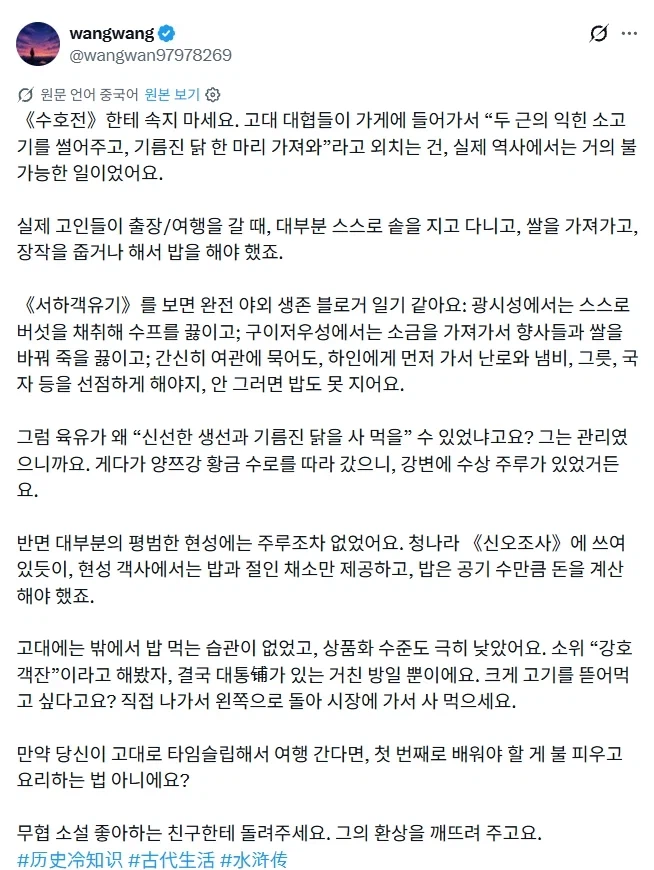
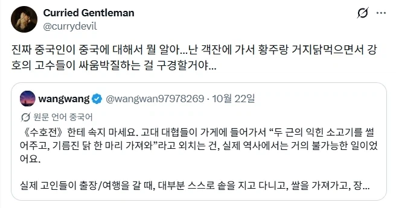

건방진 중국놈들 왜 니들이 중국에 대해서 잘 알거라 생각하지!!!!!
광서랑 귀주는 청나라때도 촌오브촌인데
객잔나오고 이런건 뭐 중국 주요도시들이지 뭐
공식따위 필요없다!!
조선 주막에서 국밥먹는것도 구라야?
조선 후기 제대로 발달하기 전에는 관영 숙박업소가 있긴 했는데 거기선 땔감만 제공해서 식량은 스스로 들고 다녀야 하긴 했음.
이거 완전 캠핑
와 디게 잘 안다. 신기해
주막에서는 밥과 술을 사먹으면 방은 꽁짜인 시스템인데 그것도 거의 조선말기 상업이 발달했을 때 일이고...
조선중기까지는 진짜로 민가에 가서 "거 하룻밤만 묵읍시다."하고 자기가 가져온 쌀을 주고 밥도 청하고 그랬다고 함.
물론 인적 네트워크가 어느정도 되어있던 양반층들은 어느지방으로 여행갈 일이 있으면 중간에 들러서 하룻밤 묵을 고을에 누가 사는지부터 조사해서 사돈에 팔촌까지 아는사람 집 찾아내서 거기서 숙식 해결함.
고관이거나 고관과 친한 친인척의 경우는 관아에서 사또 대접 받기도 함.
조선 초기~중기는 술이랑 잠자리만 팔았음
후기 들어 어떻게 물류좀 돌아가고 사람들 막 돌아다니니까 국밥 팔기 시작한거임
점소이, 까르보나라!!
하잇!
ㅋㅋㅋㅋㅋㅋㅋㅋㅋㅋㄱㅋㅋㄱ아씨 햇갈리니까 최소한 국가는 일치 시키라고!!
여기, 컵 하나만
컵을 깼다!
점소이 이곳이 수산이 유명하다던데 얼큰한 부야베스 하나 내오시게
위, 무슈!
헤이 미스점! 얼큰한 매운탕에 버번 위스키 플리즈!
그냥 과거에는 유통망 자체가 처참했었어서 객잔같은 개념이 도시말고는 불가능하다고 하긴 하드만.
무협자체가 판타지인데 뭘 엄근진을 처빠노
중세 판타지 여관같은 소리를
하......
현실에 있었을 법한 이야기를 다루니까 실제 역사를 환기시켜주는거지. 누가 판타지인거 모르나. 너야말로 엄근진이구만.
저 원본 트윗 자체가 엄근진인데 엄근진에 엄근진 하지 말라는게 엄근진이면 그걸 엄근진하는 니도 엄근진이네
그 개드립에서 진지 금지
하.......
찐
너 아니었으면 평!생 속고 살뻔했다
점소이! 여기 두강주에 얼큰한 벅력탄 하나 내오시게!
옛썰! 롸잇어웨이 써!
뭐야 10냥주면 밤시중들어주는 점소이는?
점.... 소이?
대동소이의 소이가 점소이에서 유례된걸 아시나요
근데 신오조사가 무슨 책이야?
구글링해도 안 나오는데
신조오사사게오!
점소이 메뉴판!!!
점소이! 여기 운기브런치 하나!
악! 고객님 죄송하지만 주문은 키오스크 통해서 부탁드리겠습니다!
공식이 뭘 알앜ㅋㅋㅋㅋ
음식점이 발달하려면 기본적으로 사람들이 이동을 해야하는데 중세 대부분의 국가는 이동권에 제한이 있었음
그리고 잉여 생산물로 농업이외의 업종에 종사해야하는데
화학비료가 생기기전의 중세국가는 멜서스트랩때문에 90%이상의 인구가 농업에 종사할수밖에 없음
그래서 제한적인 이동권을 가지고있던 상인들이나 규모에따라 특정 날짜에 장시를 세우는거고
상거래가 매일 벌어져야 식당을 세울수있는데 며칠에 한번씩 장이스니 식당으로 먹고살수가 없음
쉽게말해 중세기준 상거래가 매일일어나는 연안과 부두, 수도정도를 제외하면 식당장사를 할수없음
근데 무협지 보통 배경이 명말청초아님?
영웅문 시리즈는 송대부터 명대까지 쭉 넘어갈걸
당장 의천도룡기가 원말명초
조선시대에 표류해서 청나라 가본 사람들 기록보면 의외로 관료들을 위한 숙박 시설은 잘 되어 있다고 함.
김용 소설에선 안그러던데?
공식이 뭘 알아!!! 탄지공!!
객잔 2층에서 내가 앉은 탁자 위로 사람 떨어지는것도 거짓말이라고 하겠다? 공식이 뭘 안다고...!
ㄹㅇ 공식이 뭘 알아 쌰갈
여기 소면이랑 죽엽청주부터 하나 내오고 요리는 찬찬히 골라볼게